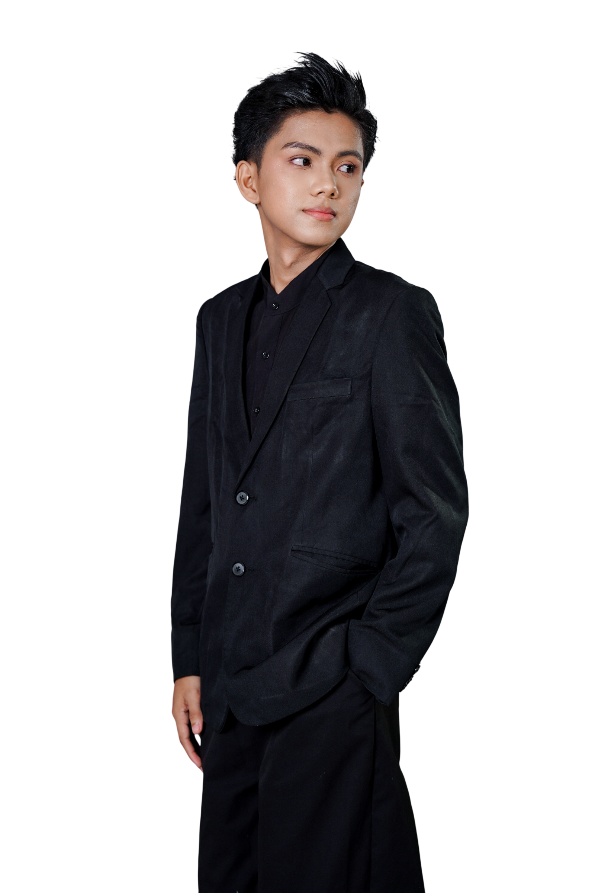

Student Management System
2025 — 2026Digitizes school records and generates official forms automatically.
Case study
I'm a full-stack web developer who builds modern web applications end to end, accessible, and fast interfaces on the front. Right now I'm focused on turning new ideas into products that people actually use.
Libon, Albay · Philippines

All eight in one list, each with a live link and a case study.
Digitizes school records and generates official forms automatically.
Everything I've shipped with — frontend, backend, database and tooling.
Four years of study, work and shipped software — most recent first.
Recognised work from the BSIS programme, and training completed alongside it.
Awarded for the Student Management System built for Libon East Central School.
Agenda 5: Inclusive and Lifelong Learning — Development Category.
Public Lecture Series on applied AI and machine learning fundamentals.
DICT–ITU DTC Initiative, delivered through the Cisco Networking Academy program.
Open to junior roles — onsite, hybrid or remote.
Let's put me to work.
I'm looking for a junior web, front-end, or software engineering role where I can keep shipping and keep learning. If that sounds like your team, my inbox is open.
Public contributions over the last year, read straight from GitHub.